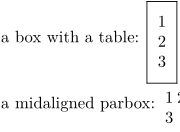

LaTeX
In LaTeX, it's fairly easy to produce vertically centered boxes, using optional arguments to either the \parbox command or the tabular environment, as in this example.
\documentclass{article} \begin{document} a box with a table: \fbox{\begin{tabular}[c]{l}1\\2\\3\end{tabular}}\par a midaligned parbox: \parbox[c]{1em}{1 2 3} \end{document}
ConTeXt
In ConTeXt, the \framed command can be used to produce similar results. To produce exactly the same output as the LaTeX commands requires the specification of rather more options, but this is mainly because the defaults are different.
a box with a table: \framed [location=middle, % vertically centered align=flushleft, % align=no (default) is a normal hbox % align=flushleft/middle/flushright/normal is used for multiple lines offset=5pt] % to make the frame wider (as in LaTeX) {1\\2\\3} a midaligned parbox: \framed [location=middle, % vertically centered align=normal, % justified alignment frame=off, % no frame width=1em] % make box 1em wide; note that line breaking is not the same as in LaTeX (?) {1 2 3}
This produces the following pair of results:
- 
This is simply a replacement for the vertical centering; to replace a tabular environment that's a proper table with more than one column, use \bTABLE ... \eTABLE or something similar instead of 1\\2\\3. See the Tables for a discussion of the different methods for doing tables in ConTeXt.